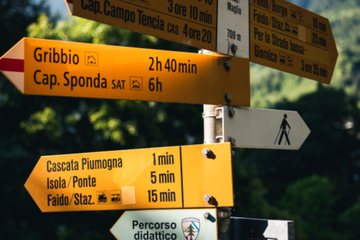

← Anterior
Verben mit Präpositionen
Siguiente →
Behörden & Anmeldung


En alemán el futuro casi siempre se dice en presente con una expresión de tiempo: «Morgen fahre ich nach Berlin». El Futur I (werden + infinitivo) sirve para promesas, predicciones y suposiciones.
| Expresión | Español | Ejemplo |
|---|---|---|
| morgen | mañana | Morgen habe ich frei. |
| übermorgen | pasado mañana | Übermorgen fliege ich nach Madrid. |
| nächste Woche | la semana que viene | Nächste Woche beginnt der Kurs. |
| nächsten Monat | el mes que viene | Nächsten Monat bekomme ich mehr Geld. |
| nächstes Jahr | el año que viene | Nächstes Jahr mache ich meinen Master. |
| in zwei Jahren | dentro de dos años | In zwei Jahren wohne ich in Deutschland. |
| bald | pronto | Ich rufe dich bald an. |
| später | más tarde | Wir sprechen später darüber. |
| am Wochenende | el fin de semana | Am Wochenende besuche ich meine Eltern. |
| im Sommer | en verano | Im Sommer machen wir Urlaub. |
| irgendwann | algún día | Irgendwann kaufe ich mir ein Haus. |
| Uso | Palabras típicas | Ejemplo |
|---|---|---|
| Una promesa | bestimmt, ganz sicher | Ich werde dich jeden Tag anrufen. |
| Una predicción | wahrscheinlich, sicher | Morgen wird es regnen. |
| Suponer algo de ahora | wohl, wahrscheinlich | Er wird wohl krank sein. |
| Un propósito firme | ab jetzt, ab Januar | Ab Januar werde ich mehr Sport machen. |
| Una orden enfática | jetzt, sofort | Du wirst jetzt deine Hausaufgaben machen! |